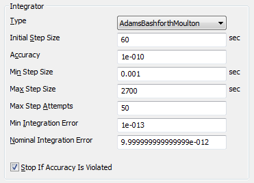
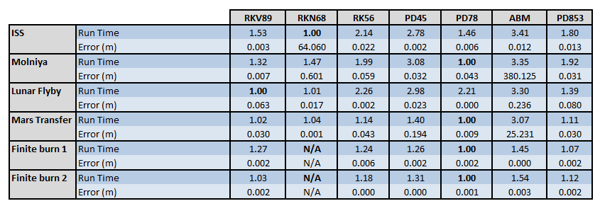
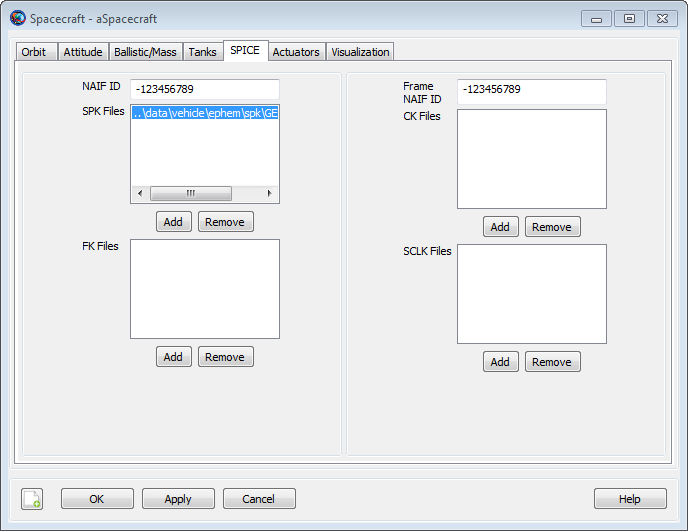

Propagator
Propagator — A propagator models spacecraft motion
Overview of Propagator Components
A Propagator is the GMAT component used to
model spacecraft motion. GMAT contains two types of propagators: a
numerical integrator type, and an ephemeris type. When using a numerical
integrator type Propagator, you can choose among a
suite of numerical integrators implementing Runge-Kutta and predictor
corrector methods. Numeric Propagators also require a
ForceModel. Additionally, you can configure a
Propagator to use SPICE kernels or Code500 ephemeris
files for propagation. This resource cannot be modified in the Mission
Sequence. However, you set one Propagator equal to
another Propagator in the mission,( i.e.
myPropagator = yourPropagator ).
GMAT's documentation for Propagator components is broken down into three sections:
For numerical Propagator documentation see Numerical Propagator
For ForceModel documentation see Force Model
For SPICE Propagator documentation see SPK-Configured Propagator
For Code500 ephemeris Propagator documentation see Code500 Ephemeris-Configured Propagator
See Also: Spacecraft, Propagate
Numerical Propagator
Overview
A Propagator object that uses a numerical
integrator (as opposed to an ephemeris propagator) is one of a few
objects in GMAT that is configured differently in the scripting and in
the GUI. In the GUI, you configure the integrator and force model
setting on the same dialog box. See the Remarks section
below for detailed discussion of GMAT’s numerical integrators as well as
performance and accuracy comparisons, and usage recommendations. This
resource cannot be modified in the Mission Sequence. However, you can do
whole object assignment in the mission,( i.e. myPropagator =
yourPropagator ).
When working in the script, you must create a ForceModel object separately from the Propagator and specify the force model using the “FM” field on the propagator object. See the Examples section later in this section for details.
Options
| Option | Description | ||||||||||||
|---|---|---|---|---|---|---|---|---|---|---|---|---|---|
| Accuracy | The desired accuracy for an integration step. GMAT uses the method selected in the field on the Force Model to determine a metric of the integration accuracy. For each step, the integrator ensures that the error in accuracy is smaller than the value defined by the metric.
| ||||||||||||
| FM | Identifies the force model used by an integrator. If no force model is provided, GMAT uses an Earth centered propagator with a 4x4 gravity model.
| ||||||||||||
| InitialStepSize | The size of the first step attempted by the integrator.
| ||||||||||||
| LowerError | The lower bound on integration error, used to determine when to make the step size larger. Applies only to AdamsBashforthMoulton integrator.
| ||||||||||||
| MaxStep | The maximum allowable step size.
| ||||||||||||
| MaxStepAttempts | The number of attempts the integrator takes to meet the tolerance defined by the field.
| ||||||||||||
| MinStep | The minimum allowable step size.
| ||||||||||||
| StopIfAccuracy-IsViolated | Flag to stop propagation if integration error value defined by Accuracy is not satisfied.
| ||||||||||||
| TargetError | The nominal bound on integration error, used to set the target integration accuracy when adjusting step size. Applies only to AdamsBashforthMoulton integrator.
| ||||||||||||
| Type | Specifies the integrator or analytic propagator used to model the time evolution of spacecraft motion.
|
GUI
 |
Settings for the embedded Runge-Kutta integrators. Select the desired integrator from the Type menu.
|  |
The Adams-Bashforth-Moulton integrator has additional settings as shown.
Remarks
Best Practices for Using Numerical Integrators
The comparison data presented in a later section suggest that the PrinceDormand78 integrator is the best all purpose integrator in GMAT. When in doubt, use the PrinceDormance78 integrator, and set MinStep to zero so that the integrator’s adaptive step algorithm controls the minimum integration step size. Below are some important comments on GMAT’s step size control algorithms and the dangers of using a non-zero value for the minimum integration step size. The AdamsBashforthMoulton integrator is a low order integrator and we only recommend its use for low precision analysis when a predictor-corrector algorithm is required. We recommend that you study the performance and accuracy analysis documented later in this section to select a numerical integrator for your application. You may need to perform further analysis and comparisons for your application.
Caution
Caution: GMAT’s default error computation mode is RSStep and this is a more stringent error control method than RSSState that is often used as the default in other software such as STK. If you set Accuracy to a very small number, 1e-13 for example, and leave ErrorControl set to RSSStep, integrator performance will be poor, for little if any improvement in the accuracy of the orbit integration. To find the best balance between integration accuracy and performance, we recommend you experiment with the accuracy setting for your selected integrator for your application. You can start with a relatively high setting of Accuracy, say 1e-9, and lower the accuracy by an order of magnitude at a time and compare the final orbital states to determine where smaller values of Accuracy result in longer propagation times without providing more accurate orbital solutions.
Caution
Caution: GMAT allows you to set a minimum step on numerical integrators. It is possible that the requested Accuracy cannot be achieved given the MinimumStep setting. The Propagator flag StopIfAccuracyIsViolated determines the behavior if Accuracy cannot be satisfied. If StopIfAccuracyIsViolated is true, GMAT will throw an error and stop execution if integration accuracy is not satisfied. If StopIfAccuracyIsViolated is false, GMAT will only throw a warning that the integration accuracy was not satisfied but will continue to propagate the orbit.
Numerical Integrators Overview
The table below describes each numerical integrator in detail.
| Option | Description |
|---|---|
| RungeKutta89 | An adaptive step, ninth order Runge-Kutta integrator with eighth order error control. The coefficients were derived by J. Verner. Verner developed several sets of coefficients for an 89 integrator and we have chosen the coefficients that are the most robust but not necessarily the most efficient. |
| PrinceDormand78 | An adaptive step, eighth order Runge-Kutta integrator with seventh order error control. The coefficients were derived by Prince and Dormand. |
| PrinceDormand853 | An adaptive step, eighth order Runge-Kutta integrator with 5th order error control that incorporates a 3rd order correction, as described in section II.10 of "Solving Ordinary Differential Equations I: Nonstiff Problems" by Hairer, Norsett and Warner. The coefficients were derived by Prince and Dormand. This integrator performs surprisingly well at loose Accuracy settings. |
| PrinceDormand45 | An adaptive step, fifth order Runge-Kutta integrator with fourth order error control. The coefficients were derived by Prince and Dormand. |
| RungeKutta68 | A second order Runge-Kutta-Nystrom type integrator with coefficients developed by by Dormand, El-Mikkawy and Prince. The integrator is a 9-stage Nystrom integrator, with error control on both the dependent variables and their derivatives. This second order implementation will correctly integrate forces that are non-conservative but it is not recommended for this use. See the integrator comparisons below for numerical comparisons. You cannot use this integrator to integrate mass during a finite maneuver because the mass flow rate is a first order differential equation not supported by this integrator. |
| RungeKutta56 | An adaptive step, sixth order Runge-Kutta integrator with fifth order error control. The coefficients were derived by E. Fehlberg. |
| AdamsBashforthMoulton | A fourth-order Adams-Bashford predictor / Adams-Moulton corrector as described in Fundamentals of Astrodynamics by Bate, Mueller, and White. The predictor step extrapolates the next state of the variables using the the derivative information at the current state and three previous states of the variables. The corrector uses derivative information evaluated for this state, along with the derivative information at the original state and two preceding states, to tune this state, giving the final, corrected state. The ABM integrator uses the RungeKutta89 integrator to start the integration process. The ABM is a low order integrator and should not be used for precise applications or for highly nonlinear applications such as celestial body flybys. |
Performance & Accuracy Comparison of Numerical Integrators
The tables below contain performance comparison data for GMAT's numerical integrators. The first table shows the orbit types, dynamics models, and propagation duration for each test case included in the comparison. Five orbit types were compared: low earth orbit, Molniya, Mars transfer (Type 2), Lunar transfer, and finite burn (case 1 is blow down, and case 2 is pressure regulated). For each test case, the orbit was propagated forward for a duration and then back-propagated to the intial epoch. The error values in the table are the RSS difference of the final position after forward and backward propagation to the initial position. The run time data for each orbit type is normalized on the integrator with the fasted run time for that orbit type. For all test cases the ErrorControl setting was set to RSSStep. Accuracy was set to 1e-12 for all integrators except for AdamsBashfourthMoulton which was set to 1e-11 because of poor performance when Accuracy was set to 1e-11.
| Orbit | Dynamics Model | Duration |
|---|---|---|
| LEO | Earth 20x20, Sun, Moon, drag using MSISE90 density, SRP | 1 day |
| Molniya | Earth 20x20, Sun, Moon, drag using Jacchia Roberts density, SRP | 3 days |
| Mars Transfer | Near Earth: Earth 8x8, Sun, Moon, SRP Deep Space: All planets as point mass perturbations Near Mars: Mars 8x8 SRP | 333 days |
| Lunar Transfer | Earth central body with all planets as point mass perturbations | 5.8 days |
| Finite Burn (case 1 and 2) | Point mass gravity | 7200 sec. |
Comparing the run time data for each integrator shown in the table below we see that the PrinceDormand78 integrator was the fastest for 4 of the 6 cases and tied with the RungeKutta89 integrator for LEO test case. For the Lunar flyby case, the RungeKutta89 was the fastest integrator, however, in this case the PrinceDormand78 integrator was at least 2 orders of magnitude more accurate given equaivalent Accuracy settings. Notice that the AdamsBashforthMoulton integrator has km level errors for some orbits because it is a low-order integrator.
|  |
Fields Unique to the AdamsBashforthMoulton Integrator
The AdamsBashforthMoulton integrator has two additional fields named TargetError and LowerError that are only active when Type is set to AdamsBashforthMoulton. If you are using another integrator type, those fields must be removed from your script file to avoid parsing errors. When working in the GUI, this is performed automatically. See examples below for more details.
Examples
Propagate an orbit using a general purpose Runge-Kutta integrator:
Create Spacecraft aSat
Create ForceModel aForceModel
Create Propagator aProp
aProp.FM = aForceModel
aProp.Type = PrinceDormand78
aProp.InitialStepSize = 60
aProp.Accuracy = 1e-011
aProp.MinStep = 0
aProp.MaxStep = 86400
aProp.MaxStepAttempts = 50
aProp.StopIfAccuracyIsViolated = true
BeginMissionSequence
Propagate aProp(aSat) {aSat.ElapsedDays = .2}Propagate using a fixed step configuration. Do this by setting InitialStepSize to the desired fixed step size and setting ErrorControl to None. This example propagates in constant steps of 30 seconds:
Create Spacecraft aSat
Create ForceModel aForceModel
aForceModel.ErrorControl = None
Create Propagator aProp
aProp.FM = aForceModel
aProp.Type = PrinceDormand78
aProp.InitialStepSize = 30
BeginMissionSequence
Propagate aProp(aSat) {aSat.ElapsedDays = .2}Propagate an orbit using an Adams-Bashforth-Moulton predictor-corrector integrator:
Create Spacecraft aSat
Create ForceModel aForceModel
aForceModel.ErrorControl = RSSStep
Create Propagator aProp
aProp.FM = aForceModel
aProp.Type = AdamsBashforthMoulton
aProp.InitialStepSize = 60
aProp.MinStep = 0
aProp.MaxStep = 86400
aProp.MaxStepAttempts = 50
% Note the following fields must be set with decreasing values!
aProp.Accuracy = 1e-010
aProp.TargetError = 1e-011
aProp.LowerError = 1e-013
aProp.StopIfAccuracyIsViolated = true
BeginMissionSequence
Propagate aProp(aSat) {aSat.ElapsedDays = .2}Force Model
Overview
A ForceModel is a model of the environmental forces and dynamics that affect the motion of a spacecraft. GMAT supports numerous force models such as point mass and spherical harmonic gravity models, atmospheric drag, solar radiation pressure, tide models, and relativistic corrections. A ForceModel is configured and attached to the Propagator object (see the Propagator object for differences between script and GUI configuration when configuring a Propagator). The Propagator, along with the Propagate command, uses a ForceModel to numerically solve the orbital equations of motion (forwards or backwards in time) using the forces configured in the ForceModel object, and may include thrust terms in the case of powered flight. See the discussion below for detailed information on how to configure force models for your application. This resource cannot be modified in the Mission Sequence.
See Also: Propagator
Fields
| Option | Description | ||||||||||||
|---|---|---|---|---|---|---|---|---|---|---|---|---|---|
| CentralBody | The central body of propagation. CentralBody must be a celestial body and cannot be a LibrationPoint, Barycenter, Spacecraft, or other special point.
| ||||||||||||
| Drag | Deprecated. This field has been replaced with Drag.AtmosphereModel. | ||||||||||||
| Drag.AtmosphereModel | Specifies the atmosphere model used in the drag force. This field is only active if there is a PrimaryBody.
| ||||||||||||
| Drag.CSSISpaceWeatherFile | The file name of the CSSI space weather file with optional path information. See Remarks for details on file format.
| ||||||||||||
| Drag.DensityModel | Enabled when Drag.AtmosphereModel is MarsGRAM2005. Specifies the Mars-GRAM density model to use. Mean is mean density with any optional wave model perturbations enabled by the input file. High is Mean density plus 1 standard deviation. Low is Mean density minus 1 standard deviation.
| ||||||||||||
| Drag.F107 | The instantaneous value of solar flux at wavelength of 10.7 cm. This field is only active if there is a PrimaryBody. Realistic values for this seeting are 50 <= Drag.F107 <= 400.
| ||||||||||||
| Drag.F107A | The average (monthly) value of solar flux at wavelength of 10.7 cm. This field is only active in the script if there is a PrimaryBody. Realistic values for this seeting are 50 <= Drag.F107A <= 400.
| ||||||||||||
| Drag.HistoricWeatherSource | Defines the source for historical flux and Geo-magnetic indeces used in Earth density modeling.
| ||||||||||||
| Drag.InputFile | Enabled when
Drag.AtmosphereModel is
MarsGRAM2005. Path to the Mars-GRAM input
namelist file that configures the model. See the MarsGRAM2005
section for details on the individual settings in this
file and how they are used by GMAT. Relative paths are relative
to the GMAT
| ||||||||||||
| Drag.MagneticIndex | The geomagnetic index (Kp) used in density calculations. Kp is a planetary 3-hour-average, geomagnetic index that measures magnetic effects of solar radiation. This field is only active if there is a PrimaryBody.
| ||||||||||||
| Drag.PredictedWeatherSource | Defines the source for predicted flux and Geo-magnetic indeces used in Earth density modeling.
| ||||||||||||
| Drag.SchattenErrorModel | The error model used from the Schatten file. Schatten predicts include mean, +2 sigma, and -2 sigma models. See Remarks for details on the file format.
| ||||||||||||
| Drag.SchattenFile | The file name of the Schatten file with optional path information. See Remarks for details on file format.
| ||||||||||||
| Drag.SchattenTimingModel | The timing model used from the Schatten file. Schatten predicts include a nominal solar cycle model, an early model, and a late model. See Remarks for details on the file format.
| ||||||||||||
| ErrorControl | Controls how error in the current integration step is estimated. The error in the current step is computed by the selection of ErrorControl and compared to the value set in the Accuracy field to determine if the step has an acceptable error or needs to be improved. All error measurements are relative error, however, the reference for the relative error changes depending upon the selection of ErrorControl. RSSStep is the Root Sum Square (RSS) relative error measured with respect to the current step. RSSState is the (RSS) relative error measured with respect to the current state. LargestStep is the state vector component with the largest relative error measured with respect to the current step. LargestState is the state vector component with the largest relative error measured with respect to the current state. Setting ErrorControl to None turns off error control and the integrator takes constant steps at the value defined by InitialStepSize on the numerical integrator.
| ||||||||||||
| GravityField.Earth.EarthTideModel | Flag for type of Earth tide model. This field is always active but only used in the dynamics when there is a harmonic gravity model for Earth.
| ||||||||||||
GravityField.PrimaryBodyName.Degree
| The degree of the harmonic gravity field. This field is only active if there is a PrimaryBody.
| ||||||||||||
GravityField.PrimaryBodyName.Order | The order of the harmonic gravity field. This field is only active if there is a PrimaryBody.
| ||||||||||||
GravityField.PrimaryBodyName.PotentialFile | The gravity potential file. This field is only active if there is a PrimaryBody. See discussion below for detailed explanation of supported file types and how to configure gravity files.
| ||||||||||||
| Model | A GUI list of "configured' gravity files defined in the file gmat_startup_file.txt. Model allows you to quickly choose between gravity files distributed with GMAT. For example, if PrimaryBody is Earth, you can select among Earth gravity models provided with GMAT such as JGM-2 and EGM-96. If you select Other, you can provide the path and filename for a custom gravity file.
| ||||||||||||
| PointMasses | A list of celestial bodies to be treated as point masses in the force model. A body cannot be both the PrimaryBody and in the PointMasses list. An empty list "{}" removes all points masses from the list.
| ||||||||||||
| PrimaryBodies | A body modeled with a "complex" force model. A primary body can have an atmosphere and harmonic gravity model. Currently GMAT only supports one primary body per force model. The primary body must be the same as the CentralBody, and cannot be included in the PointMasses field.
| ||||||||||||
| RelativisticCorrection | Sets relativistic correction on or off.
| ||||||||||||
| SRP | Sets SRP force on or off. See the Remarks section for a detailed explanation of SRP configuration. The SRP model used is set in the SRP.Model field.
| ||||||||||||
| SRP.Flux | The value of SRP flux at 1 AU. This field is only active in the script if SRP is on.
| ||||||||||||
| SRP.Flux_Pressure | The solar flux at 1 AU divided by the speed of light. This field is only active in the script if SRP is on. See the Remarks section for a detailed explanation of SRP configuration.
| ||||||||||||
| SRP.Model | The model for SRP acceleration.
| ||||||||||||
| SRP.Nominal_Sun | The value of one Astronomical Unit in km used in scaling SRP.Flux, which is flux at 1 AU, to the flux at spacecraft distance from sun. This field is only active in the script if SRP is on. See the Remarks section for a detailed explanation of SRP configuration.
|

Remarks
Overview of Primary Body/Central Body and Field Interactions
In GMAT, a primary body is a celestial body that is modeled with a complex force model which may include a spherical harmonic gravity model, tides, or drag. A body cannot appear in both the PrimaryBodies and PointMasses fields. GMAT currently requires that there are no more than one primary body per ForceModel, but this behavior will change in future versions and the user interface is designed to naturally support this future development area.
GMAT currently requires that the primary body is either the same as the CentralBody or set to None. If you change the CentralBody in the GUI, GMAT changes the primary body to None, and you can then select between None and the central body. When you select a primary body in the GUI, the Gravity and Drag fields activate and allow you to select models for those forces consistent with the body selected in the PrimaryBodies field. For example, if you select Earth as the primary body, you can only select Earth drag models in the Drag.AtmosphereModel field. See the field list above for available models.
Configuring Gravitational Models
GMAT supports point mass gravity, spherical harmonic, and Earth tide models. On a Propagator, all celestial bodies are classified into two mutually exclusive categories: PrimaryBodies, and Point Masses. To model a body as a point mass, add it to the PointMasses list. GMAT currently requires that there be only a single body in the PrimaryBodies list. When a primary body is selected, the CentralBody and primary body must be the same.
Bodies modeled as PointMasses use the gravitational parameter defined on the body (i.e. Earth.Mu) in the equations of motion. Bodies defined as PrimaryBodies use the constants defined on the potential file in the equations of motion. GMAT supports two gravity file formats: the .cof format and the STK .grv format. You can provide a custom potential file for your application as long as it is one of the supported formats. Potential files defined in the startup file are available in the Model list in the GUI. For example, the following lines in the startup file configure GMAT so that EGM96 is an available option for Model in the GUI when the primary body is Earth:
EARTH_POT_PATH = DATA_PATH/gravity/earth/ EGM96_FILE = EARTH_POT_PATH/EGM96.cof
Below is an example script snippet for configuring a custom gravity model including Earth tides.
Create ForceModel aForceModel
aForceModel.CentralBody = Earth
aForceModel.PrimaryBodies = {Earth}
aForceModel.GravityField.Earth.Degree = 21
aForceModel.GravityField.Earth.Order = 21
aForceModel.GravityField.Earth.PotentialFile = 'c:\MyData\File.cof'
aForceModel.GravityField.Earth.EarthTideModel = 'SolidAndPole'Configuring Drag Models
GMAT supports many density models for Earth including Jacchia-Roberts and various MSISE models. Density models for non-Earth bodies -- the Mars-GRAM model for example -- are included using custom plug-in components and are currently only supported in the script interface.
To configure Earth density models, select Earth as the primary body, In the GUI, this activates the AtmosphereModel list. You can configure the solar flux values using the Setup button next to the AtmosphereModel list after you have selected an atmosphere model. Below is an example script snippet for configuring the NRLMSISE00 density model.
Create ForceModel aForceModel
GMAT aForceModel.PrimaryBodies = {Earth}
GMAT aForceModel.Drag.AtmosphereModel = NRLMSISE00
Caution
Caution: GMAT uses the original single precision FORTAN code developed by the scientists who created the MSISE models. At low altitudes, the single precision density can cause numeric issues in the double precision integrator step size control and integration can be unacceptably slow. You can avoid the performance issue by using either fixed step integration or by using a relatively high Accuracy value such as 1e-8. You may need to experiment with the Accuracy setting to a value acceptable for your application.
Note that when you select None for Drag.AtmosphereModel , the fields associated with density configuration, such as Drag.F107, Drag.F107A, and Drag.MagneticIndex and others are inactive and must be removed from your script file to avoid parsing errors. When working in the GUI, this is performed automatically.
The table below describes the limits on altitude for drag models supported by GMAT.
| Model | Theoretical Altitude (h) Limits | Comments |
|---|---|---|
| MSISE86 | 90 < h < 1000 | GMAT will not allow propagation below 90 km altitude. |
| MSISE90 | 0 < h <1000 | GMAT will allow propagation below 0 km altitude but results are non-physical. |
| NRLMSISE00 | 0 < h <1000 | GMAT will allow propagation below 0 km altitude but results are non-physical. |
| JacchiaRoberts | h > 100 | GMAT will not allow propagation below 100 km altitude. |
When PrimaryBody is
Mars, you can choose Mars-GRAM 2005 as your
atmosphere model. This model is only available when the
libMarsGRAM plugin is available and enabled in the
GMAT startup file.
Warning
As of version R2015a, you can only have one unique Mars-GRAM force model configuration in a given script. If you include multiple propagators with Mars-GRAM force models with different Mars-GRAM configurations, the different configurations are not honored, and all of the propagators will use the same configuration for Mars-GRAM.
When using the MarsGRAM2005 atmosphere model, three new fields are available in the script language (but not the GUI):
Drag.InputFile
Drag.DensityModel
See the Fields section for details on these fields.
In addition, the space weather fields are treated as follows:
Drag.F107: value of 10.7 cm solar flux at 1 AU, as documented in the Fields section
Drag.F107A: not used
Drag.MagneticIndex: not used
The Mars-GRAM 2005 input file is a text file in FORTRAN NAMELIST format. Most variables in this file are passed directly to the Mars-GRAM model and are used as intended. However, some are replaced internally by GMAT-supplied values. The following table lists those input variables that are handled specially.
| Input Variable | GMAT usage |
|---|---|
| (Unlisted) | Passed through to Mars-GRAM 2005 model |
DATADIR | Always
'../data/atmosphere/MarsGRAM2005/binFiles' |
GCMDIR | Always
'../data/atmosphere/MarsGRAM2005/binFiles' |
IERT | Always 1 (Earth-receive time) |
IUTC | Always 0 (TT time) |
MONTH | Replaced by current propagation epoch |
MDAY | Replaced by current propagation epoch |
MYEAR | Replaced by current propagation epoch |
NPOS | Always 1 |
IHR | Replaced by current propagation epoch |
IMIN | Replaced by current propagation epoch |
ISEC | Replaced by current propagation epoch |
LonEW | Always 1 (positive East) |
F107 | Replaced by value of Drag.F107 |
FLAT | Replaced by current propagation state |
FLON | Replaced by current propagation state |
FHGT | Replaced by current propagation state |
MOLAhgts | Always 0 (reference ellipsoid) |
iup | Always 0 (no output) |
ipclat | Always 0 (planetographic input) |
requa | Replaced by value of Mars.EquatorialRadius |
rpole | Replaced by GMAT's value of Mars polar radius (calculated from Mars.EquatorialRadius and Mars.Flattening) |
The input file is read by the Mars-GRAM 2005 model code, which has limited error checking. If the input file or data files are incorrect or missing, GMAT may exhibit unintended behavior. Note that local winds returned by the Mars-GRAM 2005 model are not included in GMAT's drag model.
Configuring Space Weather Data for Density Models
GMAT supports several space weather input types for drag modelling including constant flux and Geo-magnetic index values, a historical weather data file, and a predicted weather data file. You can separately configure the data used for historical data and predicted data. For historical data you can choose between constant values and a CSSI space weather file. For predicted data you can choose between constant values and a Schatten predict file. Each of those sources is discussed in detail below.
The precedence for data source is determined by the simulation epoch (i.e. the epoch when density is evaluated), and the epochs contained on the data files
If both historical data and predicted data sources are set to constants, then constant values are always used.
If you have selected a CSSI file as the historical data source, if the simulation epoch falls before the last row of historical data in the CSSI file's historical data block, then the CSSI data is used (the first row is used if the simulation epoch is before the first historical data record), otherwise, the predicted data source is used. Note: GMAT does not use any of the predicted data from the CSSI file.
If you have selected the Schatten file for predicted data, if the simulation epoch is NOT in the CSSI file historical data, or the historical data source is set to constant values, then the data is used from the Schatten file.
Constant Values
GMAT supports constant flux and Geo-magnetic index values for all Earth density models. You configure GMAT to use those values for historical and predicted data as shown below using NRLMSISE00 for the example.
Create ForceModel aForceModel GMAT aForceModel.Drag.AtmosphereModel = NRLMSISE00 GMAT aForceModel.Drag.HistoricWeatherSource = 'ConstantFluxAndGeoMag' GMAT aForceModel.Drag.PredictedWeatherSource = 'ConstantFluxAndGeoMag' GMAT aForceModel.Drag.F107 = 150 GMAT aForceModel.Drag.F107A = 150 GMAT aForceModel.Drag.MagneticIndex = 3
Historical Space Weather Data
You can provide a Center for Space Standards and Innovation (CSSI) file for historical space weather data. GMAT does not use the predicted portion of the file but does use the historical portion of the data. The CCSI file format is described in detail at the Celestrak website and the files are available for download at that site and here. You configure GMAT to use historical data as shown below.
Create ForceModel aForceModel GMAT aForceModel.Drag.AtmosphereModel = NRLMSISE00 GMAT aForceModel.Drag.HistoricWeatherSource = 'CSSISpaceWeatherFile' GMAT aForceModel.Drag.CSSISpaceWeatherFile = 'CSSI_2004To2026.txt'
You can provide a full or relative path to the file, or put the file in GMAT’s data file folders documented in the startup file help.
Predicted Space Weather Data
You configure GMAT to use Schatten predicted data as shown below
Create ForceModel aForceModel GMAT aForceModel.Drag.AtmosphereModel = NRLMSISE00 GMAT aForceModel.Drag.PredictedWeatherSource = 'SchattenFile' GMAT aForceModel.Drag.SchattenFile = 'SchattenPredict.txt' GMAT aForceModel.Drag.SchattenErrorModel = 'Nominal' GMAT aForceModel.Drag.SchattenTimingModel = 'NominalCycle'
You can provide a full or relative path to the file, or put the file in GMAT’s data file folders documented in the startup file help. Additionally you can choose between Nominal, PlusTwoSigma, and MinusTwoSigma for the SchattenErrorModel, and between NominalCycle, EarlyCycle, and LateCycle for the SchattenTimingModel.
The Schatten file is distributed by the Flight Dynamics Facility (FDF) at Goddard Space Flight Center. You can apply for an account to obtain Schatten file updates at the FDF Forms Interface. Note that GMAT reads the raw file containing all permutation of mean, +2 sigma, and -2 sigma, and nominal, early and late solar cycles. The files from the FDF must be modified to include keywords that indicate when data starts and ends as shown below:
NOMINAL TIMING EARLY TIMING LATE TIMING mo. yr. mean +2sig -2sig ap mean +2sig -2sig ap mean +2sig -2sig ap BEGIN_DATA 2 2011 92 107 76 9 105 125 85 10 77 87 66 8 3 2011 93 110 77 9 106 128 86 10 79 89 67 8 4 2011 95 112 78 9 108 129 87 10 80 92 69 8 END_DATA
Data must be formatted according to FORMAT(I3,I5,I6,11I5), and no comments or blank lines can occur between the BEGIN_DATA and END_DATA keywords.
Configuring SRP Models
GMAT supports a spherical SRP model, and an SRP file for high fidelity SRP modelling. Both models use a dual cone model for central body shadowing of the spacecraft. See the Spacecraft Ballistic/Mass Properties documentation for configuring a SPAD file for a spacecraft. The script snippet below shows how to configure two ForceModels, one that use Spherical and on that uses a SPADFile.
% A spherical SRP model
Create ForceModel aForceModel_1
aForceModel_1.PrimaryBodies = {Earth}
aForceModel_1.SRP = On
aForceModel_1.SRP.Model = Spherical
% A SPAD SRP model
Create ForceModel aForceModel_2
aForceModel_2.PrimaryBodies = {Earth}
aForceModel_2.SRP = On
aForceModel_2.SRP.Model = SPADFile
You can define the solar flux using two approaches which are currently only supported in the script interface. One approach is to define the flux value using the SRP.Flux field and the value of an astronomical unit (in km) using the Nominal_Sun field as shown in the following example.
Create ForceModel aForceModel
aForceModel.PrimaryBodies = {Earth}
aForceModel.SRP = On
aForceModel.SRP.Flux = 1367
aForceModel.SRP.Nominal_Sun = 149597870.691An alternative approach is to define the flux pressure at 1 astronomical unit using the Flux_Pressure field as shown below..
Create ForceModel aForceModel
aForceModel.PrimaryBodies = {Earth}
aForceModel.SRP = On
aForceModel.SRP.Flux_Pressure = 4.53443218374393e-006
aForceModel.SRP.Nominal_Sun = 149597870.691If you mix flux settings, as shown in the example below, GMAT will use the last approach in the script. Here, GMAT will use the Flux_Pressure setting.
Create ForceModel aForceModel
aForceModel.PrimaryBodies = {Earth}
aForceModel.SRP = On
aForceModel.SRP.Flux = 1370
aForceModel.SRP.Nominal_Sun = 149597870
aForceModel.SRP.Flux_Pressure = 4.53443218374393e-006Caution
Caution: GMAT’s default option for configuring solar flux for an SRP model is to use SRP.Flux and Nominal_Sun fields. If you initially configured the Flux_Pressure field, when you save your mission via the save button in the toolbar, GMAT will write out SRP.Flux and Nominal_Sun values consistent with your setting of Flux_Pressure.
Variational Equations and the STM
GMAT can optionally propagate the orbit State Transition Matrix (STM). For more information on how to configure GMAT to compute the STM, see the Propagate command documentation.
Caution
Caution: GMAT allows you to propagate the State Transition Matrix (STM) along with the orbital state. However, not all variational terms are implemented for STM propagation. The following are implemented: point mass perturbation, spherical harmonics (with tide models), and solar radiation pressure. The following are NOT implemented: drag and relativistic terms, and finite burns. Additionally, the SRP variational term does not include the partial derivative of the percent shadow with respect to orbital state. This approximation is acceptable for orbits with short penumbra durations but is inaccurate for orbits that spend relatively long periods of time in penumbra.
Examples
A ForceModel for point mass propagation.
Create Spacecraft aSat
Create ForceModel aForceModel
aForceModel.CentralBody = Earth
aForceModel.PointMasses = {Earth}
Create Propagator aProp
aProp.FM = aForceModel
BeginMissionSequence
Propagate aProp(aSat) {aSat.ElapsedDays = .2}A ForceModel for high fidelity low Earth orbit propagation.
Create Spacecraft aSat
Create ForceModel aForceModel
aForceModel.CentralBody = Earth
aForceModel.PrimaryBodies = {Earth}
aForceModel.PointMasses = {Sun, Luna}
aForceModel.SRP = On
aForceModel.RelativisticCorrection = On
aForceModel.ErrorControl = RSSStep
aForceModel.GravityField.Earth.Degree = 20
aForceModel.GravityField.Earth.Order = 20
aForceModel.GravityField.Earth.PotentialFile = 'EGM96.cof'
aForceModel.GravityField.Earth.EarthTideModel = 'None'
aForceModel.Drag.AtmosphereModel = MSISE90
aForceModel.Drag.F107 = 150
aForceModel.Drag.F107A = 150
aForceModel.Drag.MagneticIndex = 3
aForceModel.SRP.Flux = 1359.388569998901
aForceModel.SRP.SRPModel = Spherical;
aForceModel.SRP.Nominal_Sun = 149597870.691
Create Propagator aProp
aProp.FM = aForceModel
BeginMissionSequence
Propagate aProp(aSat){aSat.ElapsedDays = .2}A ForceModel that uses a SPAD SRP File.
Create Spacecraft aSpacecraft;
aSpacecraft.DryMass = 2000
aSpacecraft.SPADSRPFile = '..\data\vehicle\spad\SphericalModel.spo'
aSpacecraft.SPADSRPScaleFactor = 1;
Create ForceModel aFM;
aFM.SRP = On;
aFM.SRP.SRPModel = SPADFile
Create Propagator aProp;
aProp.FM = aFM;
BeginMissionSequence
Propagate aProp(aSpacecraft) {aSpacecraft.ElapsedDays = 0.2}A ForceModel for high fidelity lunar orbit propagation.
Create Spacecraft moonSat
GMAT moonSat.DateFormat = UTCGregorian
GMAT moonSat.Epoch.UTCGregorian = 01 Jun 2004 12:00:00.000
GMAT moonSat.CoordinateSystem = MoonMJ2000Eq
GMAT moonSat.DisplayStateType = Cartesian
GMAT moonSat.X = -1486.792117191545200
GMAT moonSat.Y = 0.0
GMAT moonSat.Z = 1486.792117191543000
GMAT moonSat.VX = -0.142927729144255
GMAT moonSat.VY = -1.631407624437537
GMAT moonSat.VZ = 0.142927729144255
Create CoordinateSystem MoonMJ2000Eq
MoonMJ2000Eq.Origin = Luna
MoonMJ2000Eq.Axes = MJ2000Eq
Create ForceModel MoonLP165P
GMAT MoonLP165P.CentralBody = Luna
GMAT MoonLP165P.PrimaryBodies = {Luna}
GMAT MoonLP165P.SRP = On
GMAT MoonLP165P.SRP.Flux = 1367
GMAT MoonLP165P.SRP.Nominal_Sun = 149597870.691
GMAT MoonLP165P.Gravity.Luna.PotentialFile = ../data/gravity/luna/LP165P.cof
GMAT MoonLP165P.Gravity.Luna.Degree = 20
GMAT MoonLP165P.Gravity.Luna.Order = 20
Create Propagator RKV89
GMAT RKV89.FM = MoonLP165P
BeginMissionSequence
Propagate RKV89(moonSat) {moonSat.ElapsedSecs = 300}SPK-Configured Propagator
Description
An SPK-configured Propagator propagates a
spacecraft by interpolating user-provided SPICE kernels. You configure a
Propagator to use an SPK kernel by setting the
Type field to SPK. SPK kernels
and the NAIFId are defined on the
Spacecraft Resource. You control propagation,
including stopping conditions, using the Propagate
command. This resource cannot be modified in the Mission Sequence.
However, you can do whole object assignment in the mission,( i.e.
myPropagator = yourPropagator ).
See Also: Spacecraft, Propagate
Fields
| Field | Description | ||||||||||||
|---|---|---|---|---|---|---|---|---|---|---|---|---|---|
| CentralBody | The central body of propagation. This field has no effect for SPK or Code500 propagators.
| ||||||||||||
| EpochFormat | Only used for an SPK or Code500 propagator. The format of the epoch contained in the StartEpoch field.
| ||||||||||||
| Start Epoch | Only used for an SPK or Code500 propagator. The initial epoch of propagation. When an epoch is provided that epoch is used as the initial epoch. When the keyword "FromSpacecraft" is provided, the start epoch is inherited from the spacecraft.
| ||||||||||||
| StepSize | The step size for an SPK or Code500 Propagator.
| ||||||||||||
| Type | Specifies the integrator or analytic propagator used to model time evolution of spacecraft motion.
|
GUI
 |
To configure a Propagator to use SPK files,
on the Propagator dialog box, select
SPK in the Type menu. There
are four fields you can configure for an SPK propagator including
StepSize, CentralBody,
EpochFormat, and StartEpoch.
Note that changing the EpochFormat setting converts
the input epoch to the selected format. You can also type
FromSpacecraft into the
StartEpoch field and the
Propagator will use the epoch of the
Spacecraft as the initial propagation epoch.
Remarks
To use an SPK-configured Propagator, you must specify the SPK kernels and NAIFId on the Spacecraft, configure a Propagator to use SPK files as opposed to numerical methods, and configure the Propagate command to use the configured SPK propagator. The subsections and examples below discuss each of these items in detail.
Configuring Spacecraft SPK Kernels
To use an SPK-configured Propagator, you must add the SPK kernels to the Spacecraft and define the spacecraft's NAIFId. SPK Kernels for selected spacecraft are available here. Two sample vehicle spk kernels, (GEOSat.bsp and MoonTransfer.bsp) are distributed with GMAT for example purposes. An example of how to add spacecraft kernels via the script interface is shown below.
Create Spacecraft aSpacecraft
GMAT aSpacecraft.NAIFId = -123456789
GMAT aSpacecraft.OrbitSpiceKernelName = {...
'..\data\vehicle\ephem\spk\GEOSat.bsp'}To add Spacecraft SPK kernels via the GUI:
On the Spacecraft dialog box, click the SPICE tab.
Under the SPK Files list, click Add.
Browse to locate and select the desired SPK file
Repeat to add all necessary SPK kernels
In the NAIF ID field, enter the spacecraft integer NAIF id number. Note: For a given mission, each spacecraft should have a unique NAIF ID if the spacecraft are propagated with an SPK propagator.
|  |
You can add more than one kernel to a spacecraft as shown via scripting below, where the files GEOSat1.bsp and GEOSat2.bsp are dummy file names used for example purposes only and are not distributed with GMAT. In the script, you can use relative path or absolute path to define the location of an SPK file. Relative paths are defined with respect to the GMAT bin directory of your local installation.
Create Spacecraft aSpacecraft
aSpacecraft.OrbitSpiceKernelName ={'C:\MyDataFiles\GEOSat1.bsp',...
'C:\MyDataFiles\GEOSat2.bsp'}Configuring an SPK Propagator
You can define the StartEpoch of propagation of an SPK-configured Propagator on either the Propagator Resource or inherit the StartEpoch from the Spacecraft. Below is a script snippet that shows how to inherit the StartEpoch from the Spacecraft. To inherit the StartEpoch from the Spacecraft using the GUI
Open the SPK propagator dialog box,
In the StartEpoch field., type
FromSpacecraftor select FromSpacecraft from the drop-down menu
To explicitly define the StartEpoch on the Propagator Resource use the following syntax.
Create Propagator spkProp
spkProp.EpochFormat = 'UTCGregorian'
spkProp.StartEpoch = '22 Jul 2014 11:29:10.811'
Create Propagator spkProp2
spkProp2.EpochFormat = 'TAIModJulian'
spkProp2.StartEpoch = '23466.5'To configure the step size, use the StepSize field.
Create Propagator spkProp
spkProp.Type = SPK
spkProp.StepSize = 300
Interaction with the Propagate Command
An SPK-configured Propagator works with the Propagate command in the same way numerical propagators work with the Propagate command with the following exceptions:
If a Propagate command uses an SPK propagator, then you can only propagate one spacecraft using that propagator. You can however, mix SPK propagators and numeric propagators in a single propagate command.
SPK-configured Propagators will not propagate the STM or compute the orbit Jacobian (A matrix).
In the example below, we assume a Spacecraft named aSpacecraft and a Propagator named spkProp have been configured a-priori. An example command to propagate aSpacecraft to Earth Periapsis using spkProp is shown below.
Propagate spkProp(aSpacecraft) {aSpacecraft.Earth.Periapsis}Below is a script snippet that demonstrates how to propagate backwards using an SPK propagator.
Propagate BackProp spkProp(aSpacecraft) {aSpacecraft.ElapsedDays = -1.5}Behavior Near Ephemeris Boundaries
In general, ephemeris interpolation is less accurate near the boundaries of ephemeris files and we recommend providing ephemeris for significant periods beyond the initial and final epochs of your application for this and other reasons. When propagating near the beginning or end of ephemeris files, the use of the double precision arithmetic may affect results. For example, if an ephemeris file has has an initial epoch TDBModJulian = 21545.00037249916, and you specify the StartEpoch in UTC Gregorian, round off error in time conversions and/or truncation of time using the Gregorian format (only accurate to millisecond) may cause the requested epoch to fall slightly outside of the range provided on the ephemeris file. The best solution is to provide extra ephemeris data to avoid time issues at the boundaries and the more subtle issue of poor interpolation.
Warning
To locate requested stopping conditions, GMAT needs to bracket the root of the stopping condition function. Then, GMAT uses standard root finding techniques to locate the stopping condition to the requested accuracy. If the requested stopping condition lies at or near the beginning or end of the ephemeris data, then bracketing the stopping condition may not be possible without stepping off the ephemeris file which throw an error and execution will stop. In this case, you must provide more ephemeris data to locate the desired stopping condition.
Examples
Propagate a GEO spacecraft using an SPK-configured Propagator. Define the StartEpoch from the spacecraft. Note: the SPK kernel GEOSat.bsp is distributed with GMAT.
Create Spacecraft aSpacecraft;
aSpacecraft.Epoch.UTCGregorian = '02 Jun 2004 12:00:00.000'
aSpacecraft.NAIFId = -123456789
aSpacecraft.OrbitSpiceKernelName = {'..\data\vehicle\ephem\spk\GEOSat.bsp'}
Create Propagator spkProp
spkProp.Type = SPK
spkProp.StepSize = 300
spkProp.CentralBody = Earth
spkProp.StartEpoch = FromSpacecraft
Create OrbitView EarthView
EarthView.Add = {aSpacecraft, Earth, Luna}
EarthView.ViewPointVector = [ 30000 -20000 10000 ]
EarthView.ViewScaleFactor = 2.5
BeginMissionSequence
Propagate spkProp(aSpacecraft) {aSpacecraft.TA = 90}
Propagate spkProp(aSpacecraft) {aSpacecraft.ElapsedDays = 2.4}Simulate a lunar transfer using an SPK-configured Propagator. Define StartEpoch on the Propagator. Note: the SPK kernel MoonTransfer.bsp is distributed with GMAT.
Create Spacecraft aSpacecraft
aSpacecraft.NAIFId = -123456789
aSpacecraft.OrbitSpiceKernelName = {...
'..\data\vehicle\ephem\spk\MoonTransfer.bsp'}
Create Propagator spkProp
spkProp.Type = SPK
spkProp.StepSize = 300
spkProp.CentralBody = Earth
spkProp.EpochFormat = 'UTCGregorian'
spkProp.StartEpoch = '22 Jul 2014 11:29:10.811'
Create OrbitView EarthView
EarthView.Add = {aSpacecraft, Earth, Luna}
EarthView.ViewPointVector = [ 30000 -20000 10000 ]
EarthView.ViewScaleFactor = 30
BeginMissionSequence
Propagate spkProp(aSpacecraft) {aSpacecraft.ElapsedDays = 12}Code500 Ephemeris-Configured Propagator
Description
A Code500 ephemeris-configured Propagator
propagates a spacecraft by interpolating or stepping along a
user-provided Code500-format binary ephemeris file. You configure a
Propagator to use a Code500 ephemeris by setting
the Type field to Code500. The
Code500 ephemeris file is specified on the
Spacecraft.EphemerisName resource. The user
controls propagation, including stopping conditions, using the
Propagate command. This resource cannot be modified
in the Mission Sequence. However, you can do whole object assignment in
the mission sequence, (i.e. myPropagator =
yourPropagator ).
The Propagator CentralBody option is not applicable to the Code500 propagator and should not be used with the Code500 propagator type. GMAT will automatically detect and use the central body of the ephemeris file. The Propagate command should be used to traverse the ephemeris file. GMAT will throw an error message and terminate when attempting to propagate outside the bounds of the ephemeris file.
Code500 ephemeris files are binary-format files. As discussed in the EphemerisFile help, GMAT can generate Code500 ephemeris files in both PC (little-endian) and UNIX (big-endian) binary format (via EphemerisFile.OutputFormat). The Code500 propagator, however, only permits little-endian formatted files.
See Also: Spacecraft, Propagate, EphemerisFile
Fields
The only Propagator fields applicable to the Code500 ephemeris propagator are EpochFormat, StartEpoch, StepSize and Type.
| Field | Description | ||||||||||||
|---|---|---|---|---|---|---|---|---|---|---|---|---|---|
| EpochFormat | Only used for an SPK or Code500 propagator. Specifies format of the epoch contained in the StartEpoch field.
| ||||||||||||
| Start Epoch | Only used for an SPK or Code500 propagator.
Specifies initial epoch of propagation. When an epoch is
provided that epoch is used as the initial epoch. When the
keyword
| ||||||||||||
| StepSize | The step size for an Code500 Propagator. GMAT will use this step size when traversing the ephemeris file, regardless of the internal step size of the ephemeris. GMAT will perform interpolation between vectors on the file as needed.
| ||||||||||||
| Type | Specifies the integrator or analytic propagator used to model time evolution of spacecraft motion. Specify Code500 for a Code500 ephemeris propagator.
|
GUI
 |
To configure a Propagator from the GMAT GUI
to use Code500 ephemeris files, select and open a
Propagator from the Resources tree. In the
Integrator category select
Code500 from the Type
drop-down box. This will display the Code500 propagator options dialog.
There are four fields displayed for a Code500 propagator -
StepSize, CentralBody,
EpochFormat, and StartEpoch.
Note that changing the EpochFormat setting converts
the input epoch to the selected format. You can also type
FromSpacecraft into the
StartEpoch field and the
Propagator will use the epoch of the
Spacecraft as the initial propagation epoch. The
CentralBody field is displayed to the user, but is
unused when the integrator type is Code500.
Remarks
There is currently no GUI option to assign the Code500 ephemeris file to the Spacecraft resource. You must specify the Code500 ephemeris file on the Spacecraft.EphemerisName parameter via script. The subsections below provide examples of how to do this.
Configuring Spacecraft Ephemeris Files
To use a Code500 ephemeris-configured
Propagator, you must add the Code500 ephemeris
file to the Spacecraft. A sample spacecraft
Code500 ephemeris, (sat_leo.ephem, in the
data/vehicle/ephem/code500 directory) is
distributed with GMAT. This sample file has a span of 4/20/2015
00:00:00 to 4/30/2015 00:00:00. An example of how to assign this
ephemeris to a spacecraft is shown below. Relative paths are defined
with respect to the GMAT bin directory of your
local installation.
Create Spacecraft aSpacecraft
aSpacecraft.EphemerisName = '../data/vehicle/ephem/code500/sat_leo.ephem'
BeginMissionSequenceA spacecraft may have only one Code500 ephemeris assigned. There is currently no GUI option to add a Code500 ephemeris file to a spacecraft.
Configuring a Code500 Ephemeris Propagator
If you have assigned the ephemeris file to your spacecraft, configuring the propagator only requires assigning the Code500 type and the desired step size on a Propagator resource. The central body of propagation will be the central body of the the ephemeris file. If desired, you may also specify an EpochFormat and StartEpoch on the propagator to specify an initial epoch from which to start propagation. The same effect can be accomplished with an independent Propagate command (see Propagate) to the desired starting epoch.
Create Propagator Code500Prop
Code500Prop.Type = 'Code500'
Code500Prop.StepSize = 60.
BeginMissionSequenceThe same remarks mentioned in the prior section on SPK propagators with regard to interaction with the Propagate command and behavior near ephemeris boundaries also apply to the Code500 ephemeris propagator.
Examples
This example propagates a spacecraft using a Code500 ephemeris, defining the StartEpoch from the spacecraft. The ephemeris file used in this example is included in the GMAT distribution at the indicated location. The code below will run if you copy and paste it into a new GMAT script.
Create Spacecraft aSpacecraft
% Ephem file span is 4/20/2015 - 4/30/2015
aSpacecraft.EphemerisName = '../data/vehicle/ephem/code500/sat_leo.ephem'
aSpacecraft.DateFormat = UTCGregorian
aSpacecraft.Epoch = '22 Apr 2015 00:00:00.000'
Create Propagator Code500Prop
Code500Prop.Type = 'Code500'
Code500Prop.StepSize = 60.
Code500Prop.StartEpoch = 'FromSpacecraft'
Create ReportFile PropReport
PropReport.Filename = 'EphemPropagator_Code500_ForwardProp.txt'
PropReport.WriteHeaders = True
BeginMissionSequence
While aSpacecraft.ElapsedDays <= 1
Propagate Code500Prop(aSpacecraft)
Report PropReport aSpacecraft.UTCGregorian aSpacecraft.TAIModJulian ...
aSpacecraft.X aSpacecraft.Y aSpacecraft.Z ...
aSpacecraft.VX aSpacecraft.VY aSpacecraft.VZ
EndWhileAn additional, more detailed, example of use of the Code500
ephemeris propagator is shown in the
Ex_Code500_EphemerisCompare.script file provided in
the samples\Navigation directory. This script
generates a report showing the difference, in RIC coordinates, between
the orbits in two different Earth-centered Code500 ephemeris
files.